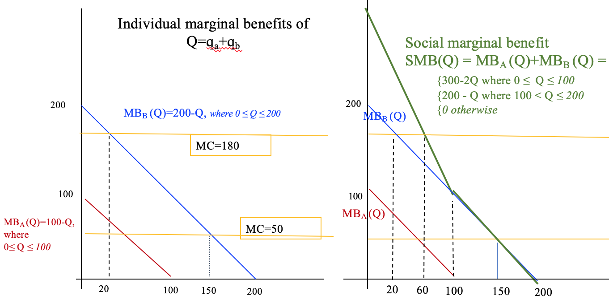

Problem sets
First problem set: Mathematical approaches, economic models, revision and warm-up, concepts in consumer theory
We will cover key parts of this problem set in the first tutorial (as well as part of the second problem set). However, you should aim to be able to do and understand all of the material on the assigned problem sets.
Goals of this problem set:
Re-acquaintance with mathematical approaches to Economics (e.g., simultaneous equations, graphing functions)
Revising the supply and demand model and its implications, applying this to real-world problems, considering empirical approaches
Understanding the logic of ‘difficult’ multiple choice questions (assessment tips)
Discussing and writing a coherent response to applied Economics questions
Problem 1: simple demand and supply curves, computation, inference

**Express the algebraic equation for these lines.
1.1.C: Use your solutions from part b to calculate the “excess demand” for orange juice if the (imposed) market price is zero
- Note that for the supply curve, quantity supplied is never negative – below a certain price, it will just be zero.
- Consider: (why) does this make sense?
*More technically, firms choose among their feasible ‘production sets’, which must be non-negative.
MCQs from previous exams, slightly adjusted
MCQ2 True or False: One example of microdata is a set of over 5 million observations of income, hours worked, and demographic information from over 1 million households’ tax returns over five years.
MCQ3 True or false: It is valid to plot observed prices and quantities traded in a market and fit a line through them to estimate a market demand curve.
MCQ5: True or false: If people who attended university earn more than those who did not, this proves that university makes people more productive.
(Extension: What conditions would be necessary to obtain credible evidence on this question?)
Consider the following utility function (direct maximisation)
\[U(x,y) = \frac{1}{4} ln x + \frac{3}{4} ln y\] where ‘ln’ denotes the natural log.
A. Show that this utility function satisfies ‘global nonsatiation’
B. Compute the marginal rate of substitution for this utility function. Does it exhibit ‘a ’diminishing marginal rate of substitution’?
C. Suppose an individual had the above utility function, and prices and income were:
\(p_x=1, p_y=2, I=12\).
Solve for the individual’s choice of each good here
How much additional utility, at the margin would be provided by an additional $1 of income. Is this a meaningful concept?
Indirect utility function example
Suppose \[U(x,y) = x^{\frac{1}{2}}y^{\frac{1}{2}}\] (Cobb-Douglas with CRS and symmetry between the two goods).
Derive the optimal consumption (the individual demand functions) for x and y as a function of income \(I\) and prices \(p_x\) and \(p_y\).
What ‘share of expenditure’ goes to each good? Weird, huh?
Now plug these functional forms into the original utility function to derive the ‘Indirect utility function’ as a function of income and prices. What is the interpretation of this function, which we will denote \(V(p_x,p_y,I)\)?
Roy’s identity example
Now take the partial derivative of the above indirect utility function \(V(p_x,p_y,I)\) with respect to the price of x \(p_x\). What is the interpretation of this?
Now take the partial derivative of the above indirect utility function \(V(p_x,p_y,I)\) with respect to income \(I\). What is the interpretation of this?
Now take the negative of the ratio of the above partial derivatives:
\[-\frac{\partial V/\partial p_x}{\partial V/\partial I}\]
Check: this should yield the (Marshallian demand) for good \(x\), \(d_x(p_x,p_y,I)\).
This holds in general: \[-\frac{\partial V/\partial p_x}{\partial V/\partial I}= d_x(p_x,p_y,I)\]
It’s called ‘Roy’s identity’. Weird, huh? Do you have any intuition for this?
Purposes of economic models, readings
This question comes from the 2018 midterm
What are the purposes and uses of ‘economic models’? Should the assumptions be `realistic’? How can these models be tested and assessed? Discuss this with reference to issues discussed in Friedman’s ‘The methodology of positive economics,’ Sugden’s (2002) ‘Credible worlds: the status of theoretical models in economics’ and or Sitzia and Sugden’s (2011) ‘Implementing theoretical models in the laboratory, and what this can and cannot achieve.’ In your discussion, try to refer to specific economic models (such as Akerlof’s ‘Market for Lemons’).
First problem set with suggested answer guidelines: Mathematical approaches, economic models, revision and warm-up, concepts in consumer theory
We will cover key parts of this problem set in the first tutorial (as well as part of the second problem set). However, you should aim to be able to do and understand all of the material on the assigned problem sets.
Goals of this problem set:
Re-acquaintance with mathematical approaches to Economics (e.g., simultaneous equations, graphing functions)
Revising the supply and demand model and its implications, applying this to real-world problems, considering empirical approaches
Understanding the logic of ‘difficult’ multiple choice questions (assessment tips)
Discussing and writing a coherent response to applied Economics questions
Appreciating more advanced elements of the model of consumer optimisation with parametric examples
Discussing the readings relevant to ‘what is theory’ and economic methodology
Problem 1: simple demand and supply curves, computation, inference
Express the algebraic equation for these lines.
Answer (suggested answer guidelines)
(Recall GCSE maths formula for straight line: \(y=mx+b\))
This is a linear function \(P = a+bQ\) (when we get to demand, we allow \(b\) to be negative)
Essentially repeating the above ‘rise over run’ calculation’…
- For supply, increase P by 1 and Q increases by 200. (See diagram)
- i.e, for \(\Delta P = 1\), \(\Delta Q = 200\)
- … implying that if price were to increase by 1, firms would be willing to provide 200 more units in total
Doing this more carefully … if we have any two points, \(x_1,y_1\) and \(x_2,y_2\) we can compute the slope \(m= \frac{y_2-y_1}{x_2-x_1}\), again ‘rise over run’.
Take any two points on the supply curve (the table above), and compute this to get the slope.
E.g., \((P_1,Q_1)\) = \((1,100)\) and \((P_2,Q_2)\)=\((2,300)\). The slope is thus \(\frac{(300-100)}{(2-1)}=200.\) as stated above. However, this is the slope of \(Q\) in \(P\).
Confusingly, although economists usually consider how \(Q\) changes in \(P\) along supply (or demand curves), our convention is to plot \(P\) on the vertical axis an \(Q\) on the horizontal. So, when drawing the slope, remember to keep this straight. If the slope of Q in P is 200, the slope of P in Q is actually the inverse of this, namely \(1/200\). (Check: \(\frac{P_2-P_1}{Q2-Q1}=1/200\)). Also note that a slope of \(1/200\) would look almost flat, so it’s better to make the quantity axis in units of 100, so you can do a slope of 1/2 (vertical increase of 1 units for each 2 units of horizontal increase).
Thus \(\frac{\Delta P}{\Delta Q} = \frac{1}{200}\)
We know the slope \(b=\frac{1}{200}\)
\(\rightarrow P = a + \frac{q}{200}\)
What about the intercept \(a\)? Just plug some value into the formula and solve for this.
- at \(P=2\), \(Q=300\)
- \(\rightarrow 2 = a + \frac{300}{200} = a + \frac{3}{2}\)
- so \(a = \frac{1}{2}\)
Thus the equation is \(P = \frac{1}{2} + \frac{Q_s}{200}\) - or \(Q_s=200P-100\)
Check: does this equation describe the graph? Is it intuitive? Supply upward-sloping in price. Intercept: \(P>1/2\) necessary for a positive quantity supplied.
For demand, increase P by 1 and Q declines by 100.
- Solves similarly to above:
- \(\rightarrow\) \(P=8-\frac{Q_d}{100}\) or \(Q_d=800-100p\)
This was the intuitive way. Another way to do this is to simply plug two points into \(P = a+bQ\) and solve these equations:
Start with the point \(P=1, Q=100\)
\[1 = a+b\times 100 \leftrightarrow\] \[1 - a = b\times 100 \leftrightarrow\] \[b = (1 - a)/100\]
Now we plug this expression for b (the slope) into the formula at another point, the point \(P=2, Q=300\).
\[2 = a+b\times 300\] Plugging in \(b=(1 - a)/100\) \(\rightarrow\) \[2 = a + \frac{1 - a}{100} \times 300 = a + 3(1 - a) = 3-2a\] \(\leftrightarrow\) \[1=2a \leftrightarrow a = 1/2\]
Now we can plug this in to solve for b: \[b = (1 - a)/100 = \frac{1}{2}/100 = 1/200\]
Again, this yields the supply curve \(P = 1/2 + Q/200\) which is the same as \(Q_s=200P-100\)
1.1.C: Use your solutions from part b to calculate the “excess demand” for orange juice if the (imposed) market price is zero
Note that for the supply curve, quantity supplied is never negative – below a certain price, it will just be zero.
- Consider: (why) does this make sense?
*More technically, firms choose among their feasible ‘production sets’, which must be non-negative.
Ans:
- Draw these functions on the same graph to aid intuition
- \(Q_d(P)=800-100P\) \(\rightarrow\) \(Q_d(0)=800\)
- \(\rightarrow\) Excess demand at \(P = 0\) is \(Q_d(0)-Q_s(0)=800-0 = 800\).
Consider: does this make sense? If the government declared ‘orange juice must be free’ and imposed no subsidies, would you expect there to be excess demand?
MCQs from previous exams, slightly adjusted
MCQ3 True or false: It is valid to plot observed prices and quantities traded in a market and fit a line through them to estimate a market demand curve.
Answer: False. “If we plot prices and quantities traded in a market, we are be observing the interaction of shifts in supply and demand curve, so it is difficult to estimate either curve without further assumptions.”
Extension question: what conditions might you need to be able to estimate a market demand curve from data?
MCQ2 True or False: One example of microdata is a set of over 5 million observations of income, hours worked, and demographic information from over 1 million households’ tax returns over five years.
Answer:
True. Microdata refers to the level of the unit of observation; the economic decision-maker, such as an individual or household, rather than an aggregation, such as an entire country or market. 65% got this one right.
Note – this was covered in the mini-lecture ‘Empirical microeconomics/econometrics’ as well as in the NS text.
Note88
I want you to have more than just a ‘textbook theoretical’ understanding. Understanding how data is used in business, economic analysis, and policy, will be very important in your career (as well as for your research project, if you are doing one)!
MCQ5: True or false: If people who attended university earn more than those who did not, this proves that university makes people more productive.
(Extension: What conditions would be necessary to obtain credible evidence on this question?)
’
Answer:
False. Those who attended university may have had a greater potential to earn money whether or not they actually attended university. They may have been more skilled, hardworking, etc.
If we had a clean experiment randomly assigning people to university we might be able to credibly assert that attending university did cause later outcomes, and perhaps caused these people to earn more money. However, we still would not that this occurred through the channel of making people more productive. There are other reasons why completing university may increase income other than ‘making people more productive’.
Consider the following utility function (direct maximisation)
\[U(x,y) = \frac{1}{4} ln x + \frac{3}{4} ln y\] where ‘ln’ denotes the natural log.
A. Show that this utility function satisfies ‘global nonsatiation’
Answer: Remember our definition of ‘global nonsatiation’ for differentiable functions:89
Global nonsatiation:
\[\frac{\partial U(\mathbf{x})}{\partial x_i}>0 \: \forall i\: \forall \mathbf{x}\]
I.e., at any consumption bundle \(\mathbf{x}\) the marginal utility of each good is positive.
Here \(MU_x = \frac{\partial U(x,y)}{\partial x} = \frac{\partial(\frac{1}{4} ln x + \frac{3}{4} ln y)}{\partial x} = \frac{1}{4x} \: >0 \: \forall x>0\).
Here \(MU_y = \frac{3}{4y} \: >0 \: \forall x>0\).
(Note that as consumption of either good goes to zero the utility converges to \(-\infty\)).
As this is always positive for both goods (at least for positive levels of consumption, and with positive income individuals with this utility function will certainly consume a positive amount of each), global nonsatiation holds.
(Note that MU is decreasing in the consumption of each good but it never becomes negative.)
B. Compute the marginal rate of substitution for this utility function. Does it exhibit ‘a ’diminishing marginal rate of substitution’?
Answer: we can either
- Explicitly totally differentiate this for this particular function, as in the Autor notes:

- Recall our general formula for MRS as the ratio of marginal utilities: \(MRS(x,y) = \frac{MU_x(x,y)}{MU_y(x,y)}\) (amount of y you will give up to attain a bit of x at point x,y) and plug in the values computed in the previous part \(\rightarrow\) \(\frac{MU_x(x,y)}{MU_y(x,y)}=\frac{4y}/{12x} = \frac{y}{3x}\)
As Autor notes, this is increasing in the amount of y consumed … The willingness to give up x for y is of course the reciprocal of this, \(\frac{3x}{y}\) which is increasing in the amount of \(x\) consumed.
This is what we refer to as diminishing marginal rate of substitution. This is the ‘normal thing we expect’ as you become relatively satiated with goods you have more of. The reason we call it diminishing MRS is because it diminishes as you move down a standard indifference curve (less X, more Y)… hmm, I can see why this terminology could be confusing.
C. Suppose an individual had the above utility function, and prices and income were:
\(p_x=1, p_y=2, I=12\).
- Solve for the individual’s choice of each good here
There are a few ways to do this:
- Impose the constraint directly by rearranging the budget constraint so that \(y=\frac{I-p_x x}{p_y}\), here \(y =\frac{12-x}{2}\). Plugging this into the utility function yields a maximization problem in one variable without a constraint (other than the non-negativity constraints).
\[max_{x} U(x,\frac{I-p_x x}{p_y})\]
Here, plugging in our specific utility function and income and price parameters:
\[max_{x} \frac{1}{4} ln (x) + \frac{3}{4} ln \frac{12-x}{2} = max_{x} \frac{1}{4} ln (x) + \frac{3}{4} ln (12-x) - \frac{3}{4}ln(2)\]
FOC: Taking the partial derivative wrt \(x\) and setting it to 0:
\[\frac{1}{4x} + \frac{3}{4(x-12)} \: = \frac{1}{x} + \frac{3}{(x-12)}=0 \rightarrow\]
\[\frac{1}{3x} = \frac{1}{12-x} \rightarrow 3x= 12-x \rightarrow 4x=12 \rightarrow x^*=3 \]
Plugging in to the modified budget constraint: \(y^{*} =\frac{12-x}{2} = (12-3)/2 = \frac{9}{2}\)
- Set up the general Lagrangian or general optimization necessary conditions (see Khan ‘just skip the Lagrangian’ that the gradient of the target and constraint function must align. This will yield the conditions
\[\frac{MU_x(x,y)}{MU_y(x,y)} = \frac{p_x}{p_y}\] and
\[I-xp_x-yp_y = 0\].
Then plug in the specific values for this problem and simplify/solve.
- Set up the Lagrangian/optimisation specific for this utility function and budget constraint, plug in specific values and solve; this is basically what Autor’s notes do (although they jump a bit between general and specific)
Note in all of this you must check your solution and consider the non-negativity constraints which we did not impose above. If your solution yields a negative consumption choice of \(x\) or \(y\) or both then it cannot be right. However, if it yields positive values then the no negativity constraint did not “bind”, i.e. it did not matter you were okay ignoring it.
Here you knew in advance that the FOC of this utility function would never yield a negative solution for either good – do you know why?
- How much additional utility, at the margin would be provided by an additional $1 of income. Is this a meaningful concept?
The value of the Lagrange constant tells us this, as Autor’s notes demonstrate in general (sec 2.3; also an application of the ‘envelope theorem’)

So, know that we believe that this is represented by \(\lambda\), we simply need to compute \(\lambda\) for this case, as Autor shows us:

Plugging in our solutions for \(x^*\) and \(y^*\) yields \(1/(4\times 3)=1/12\) and \(\frac{3}{8(9/2)}=1/12\).
So, at this point (the optimum point given these prices and income) an additional unit of income yields utility at the rate \(1/12\) per dollar.
Is this is a meaningful concept? No. We don’t see the absolute magnitude utility as meaning anything in the consumer optimization context. We would not have been able to distinguish this from a utility function that yielded twice as much utility per dollar everywhere. (However, when we apply the same optimization framework in other contexts, particularly the production context it will be meaningful, telling us how much output an additional dollar of costs will produce.)
We also could have derived this by solving the problem in general but holding \(I\) (and, if you like, prices) as a variable solving for optimised utility, and computing the derivative of this with respect to income. (I’ll add this here when I have a moment).
Indirect utility function example
Suppose \[U(x,y) = x^{\frac{1}{2}}y^{\frac{1}{2}}\] (Cobb-Douglas with CRS and symmetry between the two goods).
Derive the optimal consumption (the individual demand functions) for x and y as a function of income \(I\) and prices \(p_x\) and \(p_y\).
Answer:
There are lots of shortcuts to solving this. I solved this same case in the web-book above. Autor gives us the most complicated way to solve it, with the full Lagrangian:

What ‘share of expenditure’ goes to each good? Weird, huh?
Answer: Half to each. Thus this will not be an adequate ‘flexible’ functional form of utility to use in empirical work nor in ‘toy’ theoretical examples. Imposing this function (or any Cobb-Douglas, or more generally, any homothetic utility function) will rule out important income effects.
Now plug these functional forms into the original utility function to derive the ‘Indirect utility function’ as a function of income and prices. What is the interpretation of this function, which we will denote \(V(p_x,p_y,I)\)?
Answer:
The ‘regular’ utility function we are considering is
\[U(x,y) = x^{\frac{1}{2}}y^{\frac{1}{2}}\] Plugging in the optimised choices \(x^{*} = \frac{I}{2p_x}\) and \(y^{*} = \frac{I}{2p_y}\) yields the indirect utility function
\[V(I,p_x,p_y) = (\frac{I}{2p_x})^\frac{1}{2} (\frac{I}{2p_y})^\frac{1}{2}\]
… ‘tell me prices and income, and I’ll tell you your utility’.
(There will be an equivalent to this on the production side as well… telling us how much output can be produced by an optimizing firm willing to incur a certain cost, given particular input prices.)
Roy’s identity example
Now take the partial derivative of the above indirect utility function \(V(p_x,p_y,I)\) with respect to the price of x \(p_x\). What is the interpretation of this?
Ans:
\[\frac{\partial V(\cdot)}{\partial p_x}= -\dfrac{I}{2^\frac{3}{2}\sqrt{\frac{I}{p_x}}p_x^2}(\frac{I}{2p_y})^\frac{1}{2}\]
Interpretation: How (optimised) utility changes (decreases) as the price of X increases, at a given value of
This is kind of a mess: too much algebra. Let me simplify the example by using the equivalent utility function \(u=xy\).
This yields indirect utility
\[\tilde{V}(I,p_x,p_y) = (\frac{I}{2p_x}) (\frac{I}{2p_y})= \frac{I^2}{4p_yp_x} = \frac{I^2}{4p_y}p_x^{-1} \]
Derivative wrt the \(p_x\) is just \[\frac{\partial \tilde{V}(\cdot)}{\partial p_x}=-\frac{I^2}{4p_yp_x^2}\]
Again, interpretation: How (optimised) utility changes (decreases) as the price of X increases, starting from the optimal choices and utility at a given value of income and prices.
Now take the partial derivative of the above indirect utility function \(V(p_x,p_y,I)\) with respect to income \(I\). What is the interpretation of this?
Ans:
\[\frac{\partial}{\partial I} \frac{I^2}{4p_yp_x} = \frac{2I}{4p_yp_x} \]
Interpretation: How (optimised) utility changes (decreases) as the income increases, starting from the point achieved with a particular income and prices… this is the same as the \(\lambda\) coefficient in the Lagrangian.
Now take the negative of the ratio of the above partial derivatives:
Ans:
\[-\frac{\partial V/\partial p_x}{\partial V/\partial I} = \frac{I^2}{4p_yp_x^2}/\frac{2I}{4p_yp_x}= \frac{1}{2}\frac{I}{p_x} \]
Check: this should yield the (Marshallian demand) for good \(x\), \(d_x(p_x,p_y,I)\).
Ans: Yes, it does; recall our solution above that one always spends half of their income on good \(x\).
In fact, this holds in general, for any utility function: \[-\frac{\partial V/\partial p_x}{\partial V/\partial I}= d_x(p_x,p_y,I)\]
It’s called ‘Roy’s identity’. Weird, huh? Do you have any intuition for this?
Ans:
Intuition: The rate that utility decreases in the price of x divided by the rate utility increase in income, at optimum, is equal to the optimised consumption of good x.
Numerator: The more \(x\) I am consuming the more an increase in price reduces my ’income left over after consuming \(x\), (holding consumption of x constant).
Denominator: Each unit of ‘reduced remaining income’ costs me utility at rate \(\partial V/\partial I\).
Voila.
Purposes of economic models, readings
This question comes from the 2018 midterm
What are the purposes and uses of ‘economic models’? Should the assumptions be `realistic’? How can these models be tested and assessed? Discuss this with reference to issues discussed in Friedman’s ‘The methodology of positive economics,’ Sugden’s (2002) ‘Credible worlds: the status of theoretical models in economics’ and or Sitzia and Sugden’s (2011) ‘Implementing theoretical models in the laboratory, and what this can and cannot achieve.’ In your discussion, try to refer to specific economic models (such as Akerlof’s ‘Market for Lemons’).
Answer
There are differing views. See discussion in web book Differing views on the use of economic models and in wiki.
–>
Problem set: Public Goods
Goals of this problem set:
Build understanding of market failures arising from public goods, and the incentives for private provision
Introduce ‘best responses’ and equilibria
…
- Discussing and writing a coherent response to applied Economics questions
Through worked problems and discussion, you will better understand the concept of a public good (or a club good), its (usual) underprovision by the market, and the difficulties with determining and implementing optimal government provision. Some of the questions in the problem sent touch on Game theory, as the optimal provision choice by one person might (or might not) depend on the amount provided by others.
In considering the losses of consumer surplus from pricing above the marginal cost (of allowing another person to access the good), this also provides insight into the deadweight loss of monopoly, a topic we will get to soon.
20.10.4 Parametric examples
Consider an economy with N individuals each with income m which they can use for own consumption c at “numeraire” price 1 (representing the cost of production), or contribute to a public good.
Suppose each individual’s utility is:
\(U_i(c,G)= c + ln(G)\)
1. What is the optimal total provision of this public good?
Solving
Let each individual i’s contribution be \(g_i\), total contributions are \(G=\sum(g_i)\) and total “others” contributions are \(G_{-i}\).
Each individual’s utility is:
\[U_i= c + ln(G_{-i}+g_i)\]
and her budget constraint is: \(c+g_i=m\).
Plugging this constraint in:
\[U_i= m - g_i + ln(G_{-i}+g_i)\]
The sum of utilities is:
\[\sum_{i=1}^{N} U_i = Nm - G_i + N ln(G_i)\]
(Notice that because of the assumed quasilinear utility function this aggregates easily; the distribution of private consumption doesn’t matter to this sum.)
The optimal provision (to maximise the sum of utilities) sets: (FOC, set=0)
\[N \frac{d ln(G)}{dG}=1 \rightarrow G=N\]
Thus the optimal provision \(G^{opt}=N\).
For all i, for an equal division of this optimal provision we would have everyone contribute:
\[g_i=N/N = 1\]
2. What will be the total private voluntary provision? Does it matter if we consider only ‘symmetric’ equilibria or if we allow asymmetric provision (some provided more than others)
Solving
But \(g_i =1 \ \forall \ i\) is not a Nash equilibrium strategy profile. In fact i’s best response chooses \(g_i\) conditional on the sum of others’ contributions \(G_{-i}\),
\[U_i= m - g_i + ln(G_{-i} + g_i)\], (s.t. \(g_i \geq 0\))
…hence in effect choosing \(G\) to maximise
\[U_i(G, G_{-i})= m - (G - G_{-i}) + ln(G)\], (s.t. \(G \geq G_{-i}\)) \[U_i(G, G_{-i})= (m +G_{-i})- G + ln(G)\].
It’s easy to see that this is a concave problem (but we should still check the boundary condition … here this is \(G \geq G_{-i}\)).
Taking the first-order condition:
\[\frac{\partial U_i(\cdot)}{\partial G} = -1 + \frac{1}{G} = 0\] \[\rightarrow G = 1\]..
So, to best-respond, the individual considers \(G_{-i}\), the sum provided by everyone else, and sets \(g_i\) to “top this up” such that the ‘best response’ \(G^{BR}\) sets \(G \equiv G_{-i} + g_i = 1\). Equivalently we could state this as \(g_i^BR = 1 - G_{-i}\)
(Of course if \(G_{-i}>1\) then \(i\) cannot contribute a negative amount, so he simply contributes 0; the ‘boundary condition’. But if \(G_{-i}>1\) the other individuals would not have been best responding.)
If we want to consider a ‘symmetric’ equilibrium where all individuals do the same thing this implies that \(g_i^{BR} = G^{BR}/N = 1/N\).
3. Show/argue that an omniscient and powerful government could ensure an outcome that is a Pareto-improvement over the (symmetric) private outcome?
Consider any private outcome that involves best responses (a Nash Equilibrium), where individuals \(i=1..n\) contribute \(g_i\), respectively, to te public good, each attaining utility \(u_i(\cdot) = m_i - g_i + ln(G^{BR})\) = \(m_i - g_i + ln(1) = m_i - g_i\) (as we know that mutual best-responses lead to a total provision of 1 unit.) In the symmetric case (symmetric income and a symmetric response \(g_i=1/N \ \forall \ i\)) this implies each gain \(u_i(\cdot) = m - 1/N.\)
The government could make all better off (relative to the symmetric Nash equilibrium) by:
Imposing a (lump-sum) tax \(t_i\) on each person \(i\) such that \(\sum_{i=1..N} t_i = N\). For a symmetric tax this means everyone must pay \(t_i=1\) … As long as \(t_i < m_i\) for all individuals \(i\), this will be feasible.
Using this revenue to provide a total public good of \(G^{opt}=N\). As it knows everyones preferences (and income) it knows this is the optimal amount.
This (symmetric tax) yields utility which we label \(u_i^{g,s} = m - t_i + ln(N) = m - 1 + ln(N)\) compared to \(u_i^{br,s} = m - 1/N\) in the symmetric private voluntary provision case.
Comparing these
\(u_i^{g,s} - u_i^{br,s} = (m - 1 + ln(N)) - (m - 1/N) = ln(N)-\frac{N-1}{N} = ln(N)-1 -\frac{1}{N}\). As \(ln(2)>1/2\), \(ln(3)>1\) and \(ln(N)\) increases in \(N\) and \(1 -\frac{1}{N}\) never exceeds 1, we see that this increases welfare for any \(N>1\).
We can also show a Pareto improvement over any asymmetric equilibrium private outcomes … The logic is that the optimal provision \(G^{opt}\) will yield more total value, and this could be redistributed in any way by government through taxes and benefits, increase or decreasing each individual’s private consumption. So, you could show a public goods provision redistribution where all are as well off or better than under the (asymmetric) private provision as well.
4. Now let \(U_i = c+0.9*(G)\); answer the above questions for this case.
A. What will be the socially optimal level of the public good provided (hint: it need not be an interior solution)?
Budget constraints are: \(c+g_i=m\)
Plugging this in: \(U_i = m - g_i +0.9(G-i +g_i)\), noting that all variables must be non-negative.
Sum of utilities:
\[\sum_{i=1}^{N} u_i = N m - G + \ N(0.9G) =Nm \ – \ (N-1)0.9G \]
It costs society “1” per unit of public good that yields ‘\(N \times 0.9\)’ in benefit. So, as long as \(N>1\) (more than 1 person) we should spend as much as possible on the public good, namely, \(G^{opt}=Nm\).
Divided equally (in fact, the only possible division, obviously), \(g_i^{opt}=m\).
Note this was not a concave problem, we could not use the “first order condition” technique; we had a “boundary solution” here.
… What is the Nash Equilibrium outcome? Show that the latter is Pareto-inefficient.
Individual utilities: \(U_i = m - g_i +0.9(G_{-i} +g_i)\), noting all variables must be non-negative.
Each individual will maximize this, holding \(G_{-i}\) constant.
Think how this changes with \(g_i\). Each individual herself gains 0.9 from her own contribution of 1 unit, but loses 1 in private consumption.
So no one will contribute anything.
It is easy to show this is Pareto-inefficient and that the government could make everyone better-off under the conditions for the previous part, using similar arguments.
20.10.5 Easier problems, mainly from the NS text
16.8 parts a and b
Suppose there are three people in society who vote on whether the government should undertake specific projects. Let the net benefits of a particular project be 150, 140, and 50 dollars for persons A, B, and C, respectively.
- If the project costs $300 and these costs are to be shared equally, would a majority vote to undertake the project? What would be the net benefits to each person under such a scheme? Would total net benefits be positive?
- Suppose the project cost $375 and again costs were to be shared equally. Now would a majority vote for the project and would total net benefits be positive?
Ans to 16.8.a
- Total Net Benefits less costs = $340 >$300.
- Under equal sharing ($100 each) A and B would vote for the project, C against it.
- Net benefits for person A = 50, for person B = 40, and for person C = –50.
Ans to 16.8b.
Now net benefits fall short of costs ($340<$375) but A and B would still vote for the project.
Implication: the democratic process, ‘public choice’ may lead to overprovision (or underprovision) of certain goods
16.9 parts a-c
The town of Pleasantville is thinking of building a swimming pool. Building and operating the pool will cost the town $5,000 per day. There are three groups of potential pool users in Pleasantville:
- 1,000 families who are each willing to pay $3 per day for the pool
- 1,000 families who are each willing to pay $2 per day for the pool, and
- 1,000 families who are each willing to pay $1 per day for the pool.
Suppose also that the intended pool is large enough so that whatever number of families come on any day will not affect what people are willing to pay for the pool. (I.e., no congestion)
1a. Which property of public goods does this pool have? Which does it not have?
Would building the pool be an efficient use of resources?
Consider four possible prices for family admission to the pool: (1) 3 dollars, (2) 2 dollars, (3) 1 dollar, and (4) 0 dollars. Which of these prices would result in covering the cost of the pool? Which of the prices would achieve an efficient allocation of resources?
Ans to 16.9a
This pool is excludable (unlike a pure public good). It is nonrival because there is a zero marginal cost for one more user. (This is thus a club good).
Ans to 16.9b
Families as a whole are willing to pay $6,000 per day for the pool (\(3\times1000+2\times1000+1\times1000\)).
The pool costs only $5,000 per day to operate.
Thus building the pool would improve the allocation of resources (relative to no pool).
Ans to 16.9c
None of these prices would cover the $5000 cost of the pool.
At 3 dollars, only the highest-valuing (1000) families would come, yielding $3000 in revenue
At 2 dollars the highest-valuing families would come, as well as the second group, yielding 2000 entrants and $4000 in revenue
at 1 dollars, all 3000 families would come, yielding $3000 revenue
(Note that here, if the managers knew who had what value, ‘price-discrimination’ might raise enough revenue)
Any price that deterred someone with a positive value from using the pool would be inefficient; this is a key reason why a nonrival good cannot typically be provided efficiently in the free market.
- A price of either 1 dollar or 0 dollars would be efficient—as all the families who valued it would enter—but would require the pool to operate at a loss.
Implication: This is an argument for government provision (have the government pay for the pool through taxation, i.e., enforced payment, make it available to all). A similar argument could be made for subsidizing the railway networks.
‘Not 16.7’
NOTE: For the problem below (‘Not 16-7’), first solve this with the marginal cost of 180 per unit.
Next, solve it as written but (Warning) note that the problem as written is fairly difficult and the textbook answer is incorrect.
In each case, assume for part b that the public good will be provided at marginal cost.
Suppose the ‘demand curves’ referred to are, as discussed in lecture, the amount an individual consumer would purchase if she knew no one else would purchase any of the public good. Remember that this is the same as her marginal benefit curve (her marginal benefit of the total amount provided Q).
Also assume that these MB curves will never become negative. The minimum marginal benefit is 0.

Diagram illustrating the answers for both cases (MC=180 and MC=50)

Answer to A and B with MC=180
If \(MC=180\) the optimal provision of the public good will be in the range where both individuals are gaining marginal benefits of additional units. Here the social marginal benefit (SMB) is \(SMB(Q)=MB_A(Q)+MB_B(Q)=100-Q+200-Q=300-2Q\).
Setting \(SMB(Q)=300-2Q=MC(Q)=180 \rightarrow Q^{optimal}=60\).
However, noting A and B’s demand curves (shown above), at a price of 180 (the least it could cost per unit, given that MC=180), person A would buy no units (recall her demand curve). Person B would buy 20 units. Here we would see the classic ‘underprovision of a public good.’
Ans to ’Not-16.7’a (with MC=50)
The optimal level occurs where the social benefit less cost is maximised.
With diminishing marginal benefit and constant marginal cost, as here, this occurs where social marginal benefit equals marginal cost.
Marginal benefit can be expressed as the price an individual is willing to pay for the next unit; i.e., the price that comes from their demand curve, where this price is positive:
Here, for person A, \(q_A = 100 - P \rightarrow P= 100-q= MB_A(q)\) where \(q<100\), otherwise \(MB_A=0\)
For person B, \(q_B=200-p \rightarrow P = 200-q = MB_B(q)\) where \(q<200\), otherwise \(MB_B=0\)
As they both consume the same units, summing these ‘individual marginal benefits of each unit’ yields the ‘social marginal benefit’ of each unit. But this is difficult, as we need to be careful to sum only over the range where the marginal benefits are positive.
After the 100th unit, the marginal benefit is positive for B only. Thus, if B’s value of these units exceeds its cost, we can ignore A.
After 100 units B still gets a marginal benefit \(200-100=100\), exceeding the MC of 50. Thus, we can ignore A’s preferences in computing the optimum here.
Setting \(MB_B(q)=200-q=mc=50\) will yields the optimum provision of the good here, a provision of \(q=150\).
Interpretation: The optimal units for B alone is 150. As A doesn’t value any units above 50, the fact that A gains from the first 50 units provided is irrelevant.
Ans to Not-16.7.b (with MC=50)
This question is difficult; the key issue is that each person’s optimal choice depends on the other person’s choice!
Here are some simple points for your intuition. we will return to this in more detail when we get into game theory and ‘rationalizability’/iterated strct dominance
(Assume here that the public good will be priced at marginal cost).
We previously considered the above demand curves as each person’s demand ‘if the other purchased nothing.’ We can extend this to consider each person’s best response function: how much mosquito control they would pay for as a function of what the other would do.
We might imagine that for any outcome, players will be ‘best-responding:’
If A purchased no units, B would choose to consume where her \(MB(Q)=MC\), i.e., \(q_B=150\) units.
If A purchased some amount of units (below 150… of course), B would ‘top these up’ to the point where, for the total units provided, \(MB_B(Q)=MB_B(q_A+q_B)=MC\). This implies \(MB_B(q_A+q_B)= 200-q_A-q_B=50\). Thus \(q_A+q_B=150\) at B’s optimal choice
In this case, even though it is a public good, voluntary provision will be optimal, as noted above. (For other cases this may not occur)
The reason it is optimal here is that only B gains from units 100-150 of the public good, so the fact that he doesn’t take A’s valuation into account doesn’t matter for the margin of his choice
Ans to Not-16.7.c
This optimal provision (150), would cost \(150\times50=7500\). If we split it according to the benefits each get, we need to add up not the marginal but the total benefits each get – the area under the demand curve. I won’t bother with the calculation here.
However, noting A and B’s demand curves (shown above), at a price of 180 (the least it could cost per unit as MC=180), person A would buy no units (recall her demand curve). Person B would buy 20 units. Here we would see the classic ‘underprovision of a public good.’
Problem set: Monopolies and price discrimination
Goals of this problem set:
To work through the monopoly optimisation problem and the welfare implications, gaining a better understanding of why there is a deadweight loss.
To better understand the application of economics to policy issues
Monopolies, public goods, economics logic (not covered in tutorial)
Consider the following statement:
Taxes distorts the incentive to work, getting people to work less. To produce public goods like motorways, governments need to raise taxes, which are inefficient. Governments also have no way of knowing how much of these public goods to produce. Thus, for efficiency reasons, we should sell the motorways to a single company, who would have the right to charge whatever tolls it wanted, and the responsibility to maintain these roads.
Find two things in the above statement that an economist would find incorrect, and explain why. Find one thing in the above statement that an economist might agree with, and explain why.
Ans
Correct: (Income) taxes distort the incentive to provide labour
Wrong: but it may not get people to work less, effects could go in either direction depending on the whether leisure is a normal good, etc
(Nearly) correct: Motorways may be seen as a public good, because they are largely nonrival and nonexcludable
Wrong: Motorways are not really a pure public good, because ‘rivalry’ (there can be congestion, each car wears down the road) and ‘excludability’ (via toll roads.)
Correct: It is hard for governments to know how much of a public good to provide
- Because of the difficulty of getting people to state their true values (see the voting paradox, Arrow’s impossibility theorem).
Wrong: Selling the roads to a single company is likely to lead to inefficiency; it will tend to charge a price above the efficient level, which will lead to the ‘deadweight loss of monopoly’ (unless it can perfectly price discriminate). Also, toll roads themselves may impose additional costs, especially if people must slow down to pay the tolls.
Monopoly and deadweight loss (covered in tutorial)

Note, on an exam I might ask you to do part c via a graph.
Ans.
*Note: This (answer) should say: MR=53-2Q=MC=5… the “-” or dash in the previous statement is confusing here

d. Explain (and depict in a diagram) why this deadweight loss would be avoided if the firm could perfectly price-discriminate.


- With perfect PD firm charges everyone her maximum value of each unit
- Can sell to ‘low value’ units/consumers without reducing price for high-value ones
- Firm captures entire potential surplus, shown above.
e. Consider: under what conditions will other forms of monopoly price discrimination (second and third-degree, also income-based…) increase welfare relative to uniform pricing?
Monopoly price discrimination
Draw a diagram to illustrate 3dpd in two markets, and its consequences. Discuss the impact on welfare, firm’s profits, and consumer surplus, and what these results depend on.
Ans
Diagrams are given in the relevant part of the web book above. Practice drawing these and understand their interpretation. In which market will price be higher and why? How does the consumer surplus change in each market? How does the monopoly’s profit change?
In particular, note that if a monopoly practices 3dpd, and this leads to a reduction in the consumption of some consumers and an increase in the consumption of others, this suggests a reduction in exchange efficiency.
The consumers whose consumption increased (say ‘by X new units’) are obviously those in the group who get a price reduction after 3DPD, the ‘favoured group’, say ‘group B’. (Note: it may be helpful to consider individual demand curves here). Let \(p_B < p_u < p_A\) represent the price for the favoured group after 3dpd, the uniform price, and the price for the unfavoured group (“A”) after 3dpd, respectively. Suppose that before 3dpd group B bought a total of \(d_B\) units, and after 3dpd group B buys a total of \(d_B + x\) units. Suppose that before 3dpd group A bought a total of \(d_A\) units, and after 3dpd group A buys a total of \(d_B - y\) units.
Before 3DPD those in the favoured group obviously didn’t value these x new units of the good as much as the (consumption of other goods they would give up) at \(p_u\) (or they would have already bought them.) Now that the price for B’s has reduced to \(p_B\) they also buy these additional x units that (some in) this group value at an amount between \(P_B\) and \(p_u\).
At the same time, in response to their own price rising, people in group A buy \(y\) fewer units; they stop buying those units that someone in this group values at a between
\(P_A\) and \(p_u\).
But note that the units people in group A ‘stop buying’ were valued higher (they were willing to trade off more of other goods) than the units people in group ‘start buying’. This implies a reduction in exchange inefficiency … given the amount produced, 3dpd causes it to go to people who value it less than others, relative to uniform pricing.
Note that an increase in production is a necessary but not a sufficient condition for 3dpd to increase welfare.
Allowing a monopoly to practice 3dpd will in general increase its profits (if it can identify markets/groups with distinct elasticities and tailor its prices to these, and there is limited ‘arbitrage’ amongst consumers). It should never reduce a monopolist’s profits: it merely offers a tool a monopolist could use (if profitable) or ignore otherwise.
Note also that this point pertains to Monopoly, not duopoly or other forms of imperfect competition. For example under oligopoly (which I only briefly mentioned), a few firms are in a strategic environment with one another, and the ability to do 3dpd may or may not increase their profits. These strategic environments involve complex equilibria (we’ll see this a bit in Game Theory), so, e.g., allowing 3dpd may lead to a price war, reducing profits. We don’t know if it will ‘help firms’ in this environment.
Problem set: Uncertainty, EU, applications
‘I. The Insurance problem’
Suppose there is a 50-50 chance that a risk averse individual with a current wealth of £20,000 will contract a debilitating disease and suffer a loss of £10,000.
a) Calculate the cost of actuarially fair insurance in this situation.
Use a utility-of-income graph to show that the individual will prefer fair insurance against this loss to accepting the gamble uninsured.
Ans:
The cost of actuarially fair insurance is equal to the expected monetary value of the loss.
- Here \(E(L) = .50 \times £ 10,000 = £ 5,000\)
This implies that if she buys this insurance it will cost her £5,000, implying that wealth with insurance is always £ 15,000.
Without insurance, wealth is either £ 10,000 or £ 20,000, each with 50 percent probability.
- The individual will prefer actuarially fair insurance because the variability of wealth is lower, while the expected monetary value is the same, as shown in the graph, and she has diminishing marginal utility of income.
- This is shown in the graph below (compare \(u_a\) and \(u_b\))

Thus the person would purchase such a policy.
Note that in the graph above, because there is an equal probability of 10k or 20k, the point 15k is half the distance between 10K and 20K. Similarly, \(u_a\) is half the distance between u(10) and u(10). The slope of the diagonal line tells us the rate at which the expected utility increases as we increase the probability of the higher outcome. It is simply linear as the expected utility calculation is also linear.
b) Suppose two types of insurance policies were available: 1. A fair policy covering the complete loss and 2. A fair policy covering only half of any loss incurred.
Calculate the cost of the second type of policy and show that the individual will generally regard it as inferior to the first.
Note: we are unlikely to have time to cover this part in the tutorial.
Ans:
The cost of the second policy is £ 2,500. Now, if this individual buys policy 2, he or she will (again) have an equal chance of being well or ill.
If she stays healthy her remaining wealth (in £) is 20000-2500= 17500 (her original wealth minus the cost of the policy.)
If she falls ill her remaining wealth (in £) is \(20,000 - 2500- 10,000 +5000 = 12,500\),
i.e., her original wealth (20k) minus the cost of the policy (2500) minus her loss from illness (10,000) plus her reimbursement for half of this cost (5000).
This partial insurance is superior to no insurance but inferior to complete insurance as shown in the figure below.

Notice in this figure that \(u_b>u_c>u_a\)
(Extension to B): Suppose this person’s realised (VnM, ‘little-u’) utility function \(u = V^{1/3}\).
What is the maximum amount they would be willing to pay for the full insurance?
Ans:
To solve the first question we need to solve for her utility (EU) under no insurance. We then “invert” this to find the amount of certain income she would need to gain the same utility as this. In other words, returning to the first diagram, we need to figure out exactly what income yields utility \(u_a\), the point of that big blue dot in the first diagram (somewhere between 10k and 15k).
We then know that she would be willing to pay a price that would leave her with this income for sure, i.e., where 20k minus this price leaves her with such an income.
Computing expected utility without insurance, for this VnM utility function:
\(u_a = \frac{1}{2} V(10,000) + \frac{1}{2} V(20,000) = \frac{1}{2}(10,000^{\frac{1}{3}}+20,000^{\frac{1}{3}}) \approx 24.35\)
What level of ‘certain income’ leaves her with this same utility? Level \(y_a\) where \(u(y_a)=y_a^{1/3} = u_a\) or \(y_a=u_a^3\). Cubing the above calculated \(u_a\):
\(y_a= \frac{1}{2}(10,000^{\frac{1}{3}}+20,000^{\frac{1}{3}})^3 \approx 14,437.6\)
This is (approximately) the amount of certain income she needs to be left with after purchasing full insurance to make it just worthwhile doing.
Thus she is willing to pay up to (approximately) 20000-14437 =5,563 pounds for the full insurance.
- Suppose individuals who purchase cost-sharing policies of the second type take better care of their health, thereby reducing the loss suffered when ill to only £7,000. In this situation, what will be the cost of a cost-sharing policy? Show that some individuals may now prefer this type of policy. (This is an example of the moral hazard problem in insurance theory.)
Ans:
Now, cost of the policy is (.5)(.5)(£7,000) = £1,750. If he or she stays well, wealth is £18,250; if he or she gets sick, wealth is £20,000 – £7,000 – £1,750 + £3,500 = £14,750 each with 50 percent probability. Utility of this gamble may exceed utility of complete insurance since the expected value of wealth is now £16,500 reflecting the lower expected losses from ill health. This question part provides a brief introduction to moral hazard in insurance.
Sixth problem set: Game theory (no answers)
Suggested answers are BELOW.
This problem set covers material in NS chapter 5, plus a few additional concepts covered in lecture.
5.1 from NS - Nash equilibrium/equilibria in a simultaneous matrix game; dominant strategies

Ans:
A plays Up; B plays Left.
A’s dominant strategy is Up. B does not have a dominant strategy.
Note: this problem should be easy for you to do. If you are struggling with problems like these, you need to keep practicing and come to office hours if necessary.
*Note: There is a video solution on to this on the Cengage web site; however, in the past these videos have sometimes been hard to access
5.7 - The indefinitely/infinitely repeated prisoners’ dillemma
Do parts A and B; part C is optional enrichment

Grazing sheep: a game with a continuous action space
However, I want you to understand the concepts and principles, how to interpret a best response functions diagram, and the nature of this collective action problem. I believe that by going through all parts of this problem it will help you understand this.
This setup comes from NS problem 5.10
Consider the Tragedy of the Commons game from the chapter with two shepherds, A and B, where \(s_A\) and \(s_B\) denote the number of sheep each grazes on the common pasture.
Assume that the benefit per sheep (in terms of mutton and wool) for each shepherd equals \(300 - s_A - s_B\)
- Compute the total benefit and marginal benefit (of grazing another sheep) to to shepherds A and B
- State the formula that tells us how many sheep farmer A will graze (as a function of the number of sheep B grazes).
State the formula that tells us how many sheep farmer B will graze (as a function of the number of sheep A grazes).
2. Check your answer to see that you have correctly derived these best response functions. Now use these to derive the (outcome that is consistent with) Nash equilibrium.
3. Now draw the farmers’ ‘best response functions’ in a diagram.
- Consider the BR diagram (you may want to check the answer to the previous question first).
In this context, are sheep ‘strategic complements’ or ‘strategic substitutes’? Explain.
How can you identify the Nash equilibrium (outcome) on this diagram?
- Now consider the total surplus of these shepherds:
\[\pi_A+\pi_B = s_A\times(300 - s_A - s_B)+s_B\times(300 - s_A - s_B)\] \[(s_A+s_B)\times(300 - s_A - s_B).\]
Rewrite this in terms of the TOTAL number of sheep grazed \(S\) defined as \(s_A+s_B\) (try it before looking).
This yields
\[\pi_A+pi_B = S\times(300 - S).\]
Derive the number of sheep grazed that maximises this total profit.
(Hint: taking the derivative we see that total profits increase in the number of sheep at rate \(300-2S\).)
If each farmer grazed half of this optimal number, what profit would they each gain, and how does this compare to their profits under Nash-equilibrium play?
What concept does this illustrate?
Applying iterated strict dominance to find the set of rationalizable strategies

- Apply ‘Iterated strict dominance’ to the above game, showing your steps
- State the pure strategies that are rationalizable.
Ans:
B strictly dominates A
X strictly dominates Y
C strictly dominates D
This leaves X and Z for player 1 and B and C for player 2
Nothing else is strictly dominated for either player. Thus for player 1 X and Z are rationalizable. And for player 2 C and B are rationalizable.
‘Teen choices’ dominant strategies, pure-strategy Nash equilibria, and understanding the mixed strategy NE

Teens A and B are smitten with each other but neither knows of the other’s feelings. Suppose the teachers at their school organize a dance. The “payoff” is based on whether their advances are rebuffed or accepted. If they both Declare, they get positive utility but if they are Rebuffed they face humiliation (significantly negative payoff). Rebuffing an advance slightly elevates the teen’s standing with peers.
- What is a teen’s dominant strategy, or is there no dominant strategy?
Ans:
- There is no dominant strategy here
- It should be easy to see this; each player’s best response differs depending on the other player’s action.
- Find the pure-strategy Nash equilibrium or equilibria
Ans: - There are two: in one, both Declare, and in the other, both Rebuff/Ignore. - Use the ‘underline best responses’ method comment: <> (ANSEE)
- Will there be a mixed strategy Nash equilibrium? Explain. If you like, solve for this MSNE (2019-20 Bee2038: not necessary for exam).
Ans: In addition to the pure-strategy Nash equilibria, there is another one in mixed strategies.
We knew this must be the case because there was an odd number of equilibria in these matrix games.
Furthermore, this game is essentially a coordination game (although one where there are asymmetric payoffs to coordinating on each equilibrium in failing to coordinate); we know that such games also have a mixed strategy Nash equilibrium. … If one player is mixing with the ‘right’ proportions between the two actions it can make the other player indifferent between the two actions.
In this MSNE, each teen chooses to declare with probability 0.526. How do we find this?"
Let the probability teen A declares be \(p\) and the probability teen B declares be \(q\)
Consider: what probability of teen B declaring makes teen A indifferent between declaring and ignoring?
Compute payoffs to teen A from declaring and from ignoring as a function of \(q\)
- set these equal, solve for $q$
\[EU_{A,declare} = q \times 10 + (1-q) \times (-10) = 10q-10+10q = 20q-10\] \[EU_{A,ignore} = q \times 1 + (1-q) \times (0) = q\]
Setting these equal and solving for \(q\) that makes A indifferent:
\[EU_{A,declare}=EU_{A,ignore}\] \[20q-10=q \rightarrow 19q=10 \rightarrow q=10/19 = 0.526\]
(approximately)
As this game is symmetric the value of \(p\) that makes teen B indifferent must also be \(10/19\) (check it yourself if you doubt this).
Thus if A and B both plays ‘declare’ with probability 10/19, both are indifferent and thus best responding, and this is a Nash equilibrium.
(By the way, this is related to my research on ‘Losing Face’)
Subgame perfect Nash equilibrium and backwards induction
Consider the sequential game described by the game tree below.
 1. Use backwards-induction to find the subgame-perfect Nash equilibrium strategies, outcomes, and payoffs, of the above game.
1. Use backwards-induction to find the subgame-perfect Nash equilibrium strategies, outcomes, and payoffs, of the above game.
Ans:
Note: this problem should be easy for you to do. If you are struggling with problems like these, you need to keep practicing and come to office hours if necessary.
The one BWI outcome will be (In,Accommodate)
SPNE strategies are ‘In’ for player 1 and ‘Accomodate if player 1 plays In’ for player 2 (don’t worry too much about this)
Payoffs are 2 for player 1 and 1 for player 2.
Note the ‘first-mover advantage’ in these entry games
Another Continous action space game

Best responses, a multiple choice question example
Consider a game where governments of countries A and B simultaneously choose how many fishing boats to allow in the Arctic sea to allow from their country. Country A gets a net benefit (benefits minus costs) \(s_A(120-s_A-s_B)\) and B gets a net benefit of \(s_B(120-s_A-s_B)\), where \(S_A\) and \(S_B\) are the boats allowed by countries A and B, respectively. This leads to the best response functions depicted above.
Which statement below is True:
A. The more boats country A allows, the more boats country B wants to allow
B. There is a unique Nash Equilibrium
C. The Pareto Optimal, efficient outcome is for each country to allow 40 boats
D. There are multiple Nash Equilibria in this game
E. There are no Nash Equilibria in this game
Ans.
B. There is a unique Nash Equilibrium
… this is the unique point where the best response functions intersect, where each country is best responding to one another. B’s best response when B allows 40 boats is to also allow 40 boats, and vice-versa.
False answers explained:
A is false because these BR functions are both negative sloping; this is also intuitive as the benefit of allowing an additional boat declines the more boats the other country allows.
C is false because it is not efficient in the Pareto optimality sense.
To compute this, for Pareto optimality here we would need that total boats are at the point where the total net marginal benefit is zero. If it were positive, more boats could be allowed. If it were negative, fewer boats should be allowed. In either case the total surplus could be increased and split between the two countries. If an improvement can be made for both parties, the original situation is not Pareto optimal.
But you do not need to compute this; each country’s boats are exerting a negative externality on the others’. We know each country will not care about this, so they will choose too many boats from a total (both countries) net-benefit context. This is a ‘tragedy of the commons’ situation; it is similar to a prisoner’s dillemma, but in the context of continuous strategy space (any positive number of boats, rather than Rat vs. Silent)
D is false because B is true. (Note that I will never ask you to consider mixed strategy equilibria in a continuous-strategy context, only perhaps in a matrix game like BoS)
E is false because B is true
… For B, if you wanted to compute this, consider the total benefit \(S\times(120-S)\), where \(S=s_A+S_B\). Taking the ‘first order condition’ (set derivative equal to 0) yields \(120-2S=0\) \(\rightarrow S^{\ast}=60\) Note this is fewer boats than the Nash Equilibrium \(s_A+s_B=40+40=80\), and it yields correspondingly higher total benefit: \(60\times(120-60)=3600 > 2\times 40 \times (120-40-40)=3200\).
–>
Sixth problem set: Game theory, with answers
This problem set covers material in NS chapter 5, plus a few additional concepts covered in lecture.
5.1 from NS - Nash equilibrium/equilibria in a simultaneous matrix game; dominant strategies
Ans:
A plays Up; B plays Left.
A’s dominant strategy is Up. B does not have a dominant strategy.
Note: this problem should be easy for you to do. If you are struggling with problems like these, you need to keep practicing and come to office hours if necessary.
*Note: There is a video solution on to this on the Cengage web site; however, in the past these videos have sometimes been hard to access
5.5 from NS - writing down a game matrix, finding NE and dominant strategies

Ans:

Note: this problem should be easy for you to do, although translating from the ‘word problem’ to the matrix may take some thinking.
NS 5.6 - Mixed strategy NE


5.7 - The indefinitely/infinitely repeated prisoners’ dillemma
Do parts A and B; part C is optional enrichment
Ans to a:
Using the underlining method shows that Rat is a dominant strategy for both and that both choosing Rat is a Nash equilibrium. (Show this)
Strategically, this is a prisoner’s dillemma, but the payoffs are somewhat different than the payoffs you saw before. However, this does not affect the pure strategy NE or dominant strategies (nor ISD/rationalisable strategies) for this game played a single time.
Ans to b:
The expected payoff if everyone follows the specified trigger strategy without deviation is:
\[1+(g)(1)+(g^2)(1)+(g^3)(1)+...=(1((1+g+g^2+g^3+...)=1/(1-g)\]
- Thus, a player’s expected utility from following this ‘trigger’ strategy is \(\frac{1}{1-g}\)
If a player deviates to Rat in the first period, his or her payoff is 3 in the first period (the period in which she deviates) and 0 from then on.
So her expected payoff from deviating is simply 3.
Thus for the trigger strategies to be an equilibrium, \(\frac{1}{1-g} \geq 3\)
I.e., \(g \geq \frac{2}{3}\).
Once again, cooperation is sustainable if the probability of continuing is high enough.
(This problem was challenging but it is worth looking at closely!)
Ans to c:
The expected equilibrium payoff is the same as in part b, \(1/(1-g)\). If a player deviates from tit-for-tat, he or she earns 3 in the first period, 0 in the second, and then the players return to the original equilibrium for an expected payoff of
\(3+(g)(0)+(g^2)(1)+(g^3)(1)+...=2+1+(g)(1-1)+(1)(g^2+g^3+...)=2-g+(1)(1+g+g^2+g^3+...)=2-g+1/(1-g)\)
For this payoff from deviating to be less than the equilibrium payoff, \(2 - g \geq 0\) , implying \(g \geq 2\). This is impossible since g is a probability. So players cannot sustain cooperation on Silent using tit-for-tat in this game.
Grazing sheep: a game with a continuous action space
This setup comes from NS problem 5.10
Consider the Tragedy of the Commons game from the NS chapter with two shepherds, A and B, where \(s_A\) and \(s_B\) denote the number of sheep each grazes on the common pasture.
Assume that the benefit per sheep (in terms of mutton and wool) for each shepherd equals \(300 - s_A - s_B\)
- Compute the total benefit and marginal benefit (of grazing another sheep) to to shepherds A and B
Ans:
Total benefit to A from a flock of \(s_A\) sheep, \(\pi_A\) is \(\pi_A = s_A\times(300 - s_A - s_B)\).
Similarly for shepherd B, switching \(s_A\) and \(s_B\), we have total benefit \(\pi_B = s_B\times(300 - s_A - s_B)\)
Taking the derivative of this with respect to \(s_A\), we see that the marginal benefit of an additional sheep by farmer A (\(s_A\)) is \(MB_A(s_A) = 300 - 2s_A - s_B\).
Similarly for farmer B, \(MB_B(s_B) = 300 - 2s_B - s_A\).
Assume that the (total and marginal) cost of grazing sheep is zero since the common can be freely used.
- State the formula that tells us how many sheep farmer A will graze (as a function of the number of sheep B grazes).
State the formula that tells us how many sheep farmer B will graze (as a function of the number of sheep A grazes).
Ans:
Setting the marginal benefit equal to the marginal cost 0 gives
\[s_A = 150-s_B/2.\]
Similarly,
\[s_B = 150-s_A/2.\]
These are the best response functions.
2. Check your answer to see that you have correctly derived these best response functions. Now use these to derive the (outcome that is consistent with) Nash equilibrium.
Ans:
Solving simultaneously, i.e., substituting one into the other…
\[s_A = 150-s_B/2.\]
Substitute \(s_B = 150-s_A/2\) into this \(\rightarrow\)
\[s_A = 150-(150-s_A/2)/2.\]
Some algebra… \[\rightarrow s_A^{ne} = 100\]
\[s_B = 150-s_A/2\] … substituting in \(s_A = 100\) \(\rightarrow\) \[s_B^{ne}=100\]
3. Now draw the farmers’ ‘best response functions’ in a diagram.
Ans:

4. Consider the BR diagram (you may want to check the answer to the previous question first).
In this context, are sheep ‘strategic complements’ or ‘strategic substitutes’? Explain.
How can you identify the Nash equilibrium (outcome) on this diagram?
Ans:
These are strategic substitutes for both shepherds: if A grazes more sheep, B wants to graze fewer sheep, and vice versa. We see this in the downward slope of the BR functions.
- Now consider the total surplus of these shepherds: \[\pi_A+\pi_B = s_A\times(300 - s_A - s_B)+s_B\times(300 - s_A - s_B)\] \[(s_A+s_B)\times(300 - s_A - s_B).\]
Rewrite this in terms of the TOTAL number of sheep grazed \(S\) defined as \(s_A+s_B\) (try it before looking).
This yields
\[\pi_A+pi_B = S\times(300 - S).\]
Derive the number of sheep grazed that maximises this total profit.
(Hint: taking the derivative we see that total profits increase in the number of sheep at rate \(300-2S\).)
If each farmer grazed half of this optimal number, what profit would they each gain, and how does this compare to their profits under Nash-equilibrium play?
What concept does this illustrate?
Ans:
This is a simple quadratic function, so we set the first derivative equal to zero … or again, marginal benefit equal to the zero marginal cost.
\(300-2S=0\) \(\rightarrow S^{opt}= 150\).
So 150 total sheep grazed maximizes the total profits.
If A and B each grazed half of this, or 75 sheep, each would profit \(\pi_B = \pi_A = 75\times(300 - 75 - 75) = 75\times150 = 11,250\).
In contrast, under Nash equilibrium play each grazes 100 sheep, and each profits: \(\pi_B = \pi_A = 100\times(300 - 100 - 100 ) = 100 \times100 = 10,000\).
So the Nash equilibrium outcome is not Pareto Optimal. This is a ‘collective action problem’ known as the ‘tragedy of the commons’ (rem: a ‘commons’ is a good that is rival but non-excludable). As each shepherd only considers his or her own payoffs and not the impact of her grazing on the other shepherd, voluntary action leads to a less than optimal outceme.
Applying iterated strict dominance to find the set of rationalizable strategies
- Apply ‘Iterated strict dominance’ to the above game, showing your steps
- State the pure strategies that are rationalizable.
Ans:
B strictly dominates A
X strictly dominates Y
C strictly dominates D
This leaves X and Z for player 1 and B and C for player 2
Nothing else is strictly dominated for either player. Thus for player 1 X and Z are rationalizable. And for player 2 C and B are rationalizable.
‘Teen choices’ dominant strategies, pure-strategy Nash equilibria, and understanding the mixed strategy NE
Teens A and B are smitten with each other but neither knows of the other’s feelings. Suppose the teachers at their school organize a dance. The “payoff” is based on whether their advances are rebuffed or accepted. If they both Declare, they get positive utility but if they are Rebuffed they face humiliation (significantly negative payoff). Rebuffing an advance slightly elevates the teen’s standing with peers.
- What is a teen’s dominant strategy, or is there no dominant strategy?
Ans:
- There is no dominant strategy here
- It should be easy to see this; each player’s best response differs depending on the other player’s action.
- Find the pure-strategy Nash equilibrium or equilibria
Ans: - There are two: in one, both Declare, and in the other, both Rebuff/Ignore. - Use the ‘underline best responses’ method comment: <> (ANSEE)
- Will there be a mixed strategy Nash equilibrium? Explain. If you like, solve for this MSNE (2019-20 Bee2038: not necessary for exam).
Ans: In addition to the pure-strategy Nash equilibria, there is another one in mixed strategies.
We knew this must be the case because there was an odd number of equilibria in these matrix games.
Furthermore, this game is essentially a coordination game (although one where there are asymmetric payoffs to coordinating on each equilibrium in failing to coordinate); we know that such games also have a mixed strategy Nash equilibrium. … If one player is mixing with the ‘right’ proportions between the two actions it can make the other player indifferent between the two actions.
In this MSNE, each teen chooses to declare with probability 0.526. How do we find this?"
Let the probability teen A declares be \(p\) and the probability teen B declares be \(q\)
Consider: what probability of teen B declaring makes teen A indifferent between declaring and ignoring?
Compute payoffs to teen A from declaring and from ignoring as a function of \(q\)
- set these equal, solve for $q$
\[EU_{A,declare} = q \times 10 + (1-q) \times (-10) = 10q-10+10q = 20q-10\] \[EU_{A,ignore} = q \times 1 + (1-q) \times (0) = q\]
Setting these equal and solving for \(q\) that makes A indifferent:
\[EU_{A,declare}=EU_{A,ignore}\] \[20q-10=q \rightarrow 19q=10 \rightarrow q=10/19 = 0.526\]
(approximately)
As this game is symmetric the value of \(p\) that makes teen B indifferent must also be \(10/19\) (check it yourself if you doubt this).
Thus if A and B both plays ‘declare’ with probability 10/19, both are indifferent and thus best responding, and this is a Nash equilibrium.
(By the way, this is related to my research on ‘Losing Face’)
Subgame perfect Nash equilibrium and backwards induction
Consider the sequential game described by the game tree below.
1. Use backwards-induction to find the subgame-perfect Nash equilibrium strategies, outcomes, and payoffs, of the above game.
Ans:
Note: this problem should be easy for you to do. If you are struggling with problems like these, you need to keep practicing and come to office hours if necessary.
The one BWI outcome will be (In,Accommodate)
SPNE strategies are ‘In’ for player 1 and ‘Accomodate if player 1 plays In’ for player 2 (don’t worry too much about this)
Payoffs are 2 for player 1 and 1 for player 2.
Note the ‘first-mover advantage’ in these entry games
Another Continous action space game
Best responses, a multiple choice question example
Consider a game where governments of countries A and B simultaneously choose how many fishing boats to allow in the Arctic sea to allow from their country. Country A gets a net benefit (benefits minus costs) \(s_A(120-s_A-s_B)\) and B gets a net benefit of \(s_B(120-s_A-s_B)\), where \(S_A\) and \(S_B\) are the boats allowed by countries A and B, respectively. This leads to the best response functions depicted above.
Which statement below is True:
A. The more boats country A allows, the more boats country B wants to allow
B. There is a unique Nash Equilibrium
C. The Pareto Optimal, efficient outcome is for each country to allow 40 boats
D. There are multiple Nash Equilibria in this game
E. There are no Nash Equilibria in this game
Ans.
B. There is a unique Nash Equilibrium
… this is the unique point where the best response functions intersect, where each country is best responding to one another. B’s best response when B allows 40 boats is to also allow 40 boats, and vice-versa.
False answers explained:
A is false because these BR functions are both negative sloping; this is also intuitive as the benefit of allowing an additional boat declines the more boats the other country allows.
C is false because it is not efficient in the Pareto optimality sense.
To compute this, for Pareto optimality here we would need that total boats are at the point where the total net marginal benefit is zero. If it were positive, more boats could be allowed. If it were negative, fewer boats should be allowed. In either case the total surplus could be increased and split between the two countries. If an improvement can be made for both parties, the original situation is not Pareto optimal.
But you do not need to compute this; each country’s boats are exerting a negative externality on the others’. We know each country will not care about this, so they will choose too many boats from a total (both countries) net-benefit context. This is a ‘tragedy of the commons’ situation; it is similar to a prisoner’s dillemma, but in the context of continuous strategy space (any positive number of boats, rather than Rat vs. Silent)
D is false because B is true. (Note that I will never ask you to consider mixed strategy equilibria in a continuous-strategy context, only perhaps in a matrix game like BoS)
E is false because B is true
… For B, if you wanted to compute this, consider the total benefit \(S\times(120-S)\), where \(S=s_A+S_B\). Taking the ‘first order condition’ (set derivative equal to 0) yields \(120-2S=0\) \(\rightarrow S^{\ast}=60\) Note this is fewer boats than the Nash Equilibrium \(s_A+s_B=40+40=80\), and it yields correspondingly higher total benefit: \(60\times(120-60)=3600 > 2\times 40 \times (120-40-40)=3200\).
–>
One might argue that this involves some level of aggregation, as the household may consist of multiple individuals. However, conventionally household-level data is considered micro-data, perhaps because: 1. We typically (but not always) consider the household as a decision-making agent, the ‘unitary household model) 2. This is not ’very aggregated’ and still has many many independent units. We typically consider it microdata unless it is aggregated, e.g., at the level of a region or country.↩
Also note that global nonsatiation is a stronger condition than local nonsatiation: if global holds than local must also hold.↩